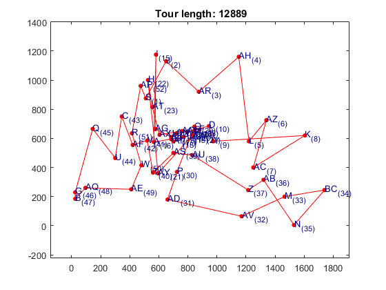

Improving the convergence of the Hopfield Network applied to the TSP by reducing the parameter C
In this section, you will be able to see how the convergence of the Hopfield Network is improved when reducing the free parameter C. Note that this had been proved experimentaly but there was no analytical proof until [ref].
Contents
TSPLIB problem and network parameters
seed = 10;
rng(seed); % For reproducibility
TSPLIB Problem:
problem = tsplib({'berlin52'});
Number of cities:
N = problem.NumberOfCities;
Free parameter C:
C = 1e5;
Creating the HopfieldNetworkTSP object with value of C 'big'
Providing problem coordinates cities and distance matrix to the HopfieldNetworkTSP network by creating a HopfieldNetworkTSPOptions object of options
options = tsphopfieldnetOptions('Coordinates',problem.Coordinates,... 'DistanceMatrix',problem.DistanceMatrix,... 'DistanceType',problem.DistanceType); net1 = tsphopfieldnet(N,C,options);
Data coordinates (cities) can be visualized before training takes place:
plot(net1);
Warning: Simulation has not taken place yet. Use 'sim(net)' to simulate your network.
Training the network
The default training algorithm is trainty
train(net1);
Results of the training phase. Network parameters
getTrainParam(net1)
ans =
struct with fields:
A: 1.0000e+05
B: 100003
C: 100000
D: 1
K: 0
N: 52
Np: 52.0000
dL: 0.0087
dU: 1
dUaux: 1716
rho: 0.0087
Simulating the network
The default simulation algorithm is talavan-yanez
sim(net1);
Visualizing results
getResults(net1) plot(net1);
ans =
struct with fields:
CheckpointFilename: ''
CompTime: 0.6721
Energy: [1×836 double]
ExitFlag: 1
ItersReached: 836
Time: [1×836 double]
TourLength: 29725
ValidPath: 1
VisitOrder: [1×52 double]

Repeating the tsphopfieldnet network simulation with a smaller value of C
rng(seed); % For reproducibility
C = 1e-5;
net2 = tsphopfieldnet(N,C,options);
train(net2);
sim(net2);
getResults(net2)
plot(net2);
ans =
struct with fields:
CheckpointFilename: ''
CompTime: 0.1868
Energy: [1×220 double]
ExitFlag: 1
ItersReached: 220
Time: [1×220 double]
TourLength: 12889
ValidPath: 1
VisitOrder: [1×52 double]
 Note that not only the solution was improved, but the number of iterations and time to convergence was considerably improved.